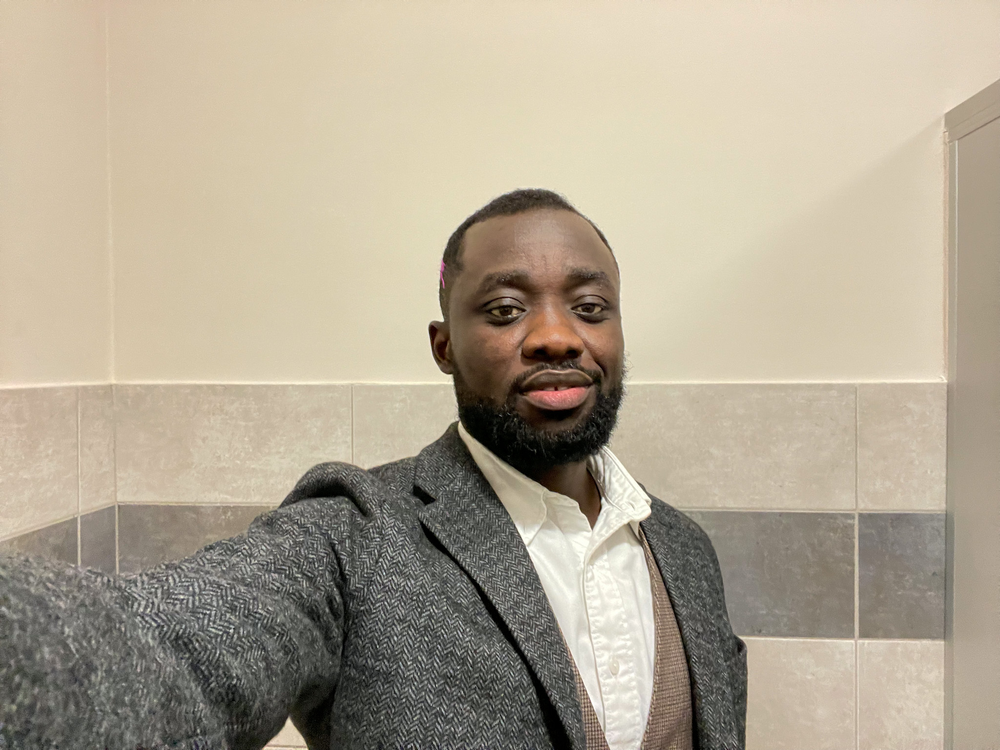

Benjamin Papa Yaw Asmah

Summary
As a Software Engineering student with a passion for frontend development, I am eager to leverage my programming skills and problem-solving abilities to contribute to the field of healthcare. My goal is to become proficient in frontend technologies and create engaging user experiences. I am particularly interested in exploring the applications of blockchain technology and its potential impact on healthcare and other industries.
Education
- 2022 - Now: Software Engineering, ALX Africa, Remote
- 2022 - Now: Student, Wyższa Szkoła Gospodarki,
Bydgoszcz, Poland
- 2010 - 2016: MBBS - Nanchang University, China
- 2008 - 2010: BSc. Biological Science,
University of Cape Coast, Ghana
- 2004 - 2007: General Science - St. John’s High School, Ghana
Work Experience
Software Engineering Student, ALX Africa, Remote
November 2022 - Now
- JavaScript
- HTML and CSS
- Programming languages such as C and Python
- Utilized version control systems such as Git for code management
- Proficient in command line Unix for performing tasks such as file manipulation, directory navigation, and system configuration
- 2020 - 2022: Occupational Health Specialist, From D Recycling Company, Japan
- 2018 - 2020: Biology and Chemistry Teacher, Carnegie International High School, China
- 2017 - 2018: Research Student in Pharmacological Laboratory, Xuzhou University, China
- 2016 - 2017: Intern Doctor, Tarkwa Government Hospital, Ghana
Skills
- Basic knowledge of HTML, CSS, and JavaScript
- Knowledge of Bootstrap for responsive web design
- Experience with version control using Git for code management
- Learning ability : eagerness to learn
- Proficiency in using command line Unix for tasks such as file manipulation, directory navigation, and system configuration
- Familiar with C and Python
- Effective problem-solving abilities, including analyzing and identifying solutions for software testing, debugging, and troubleshooting
- Knowledge in solidity and smart contract development
- Strong research skills for data analysis and problem-solving
- Occupational health and safety expertise
- Teaching and lesson planning experience in Biology and Chemistry
About Me
Contact Me